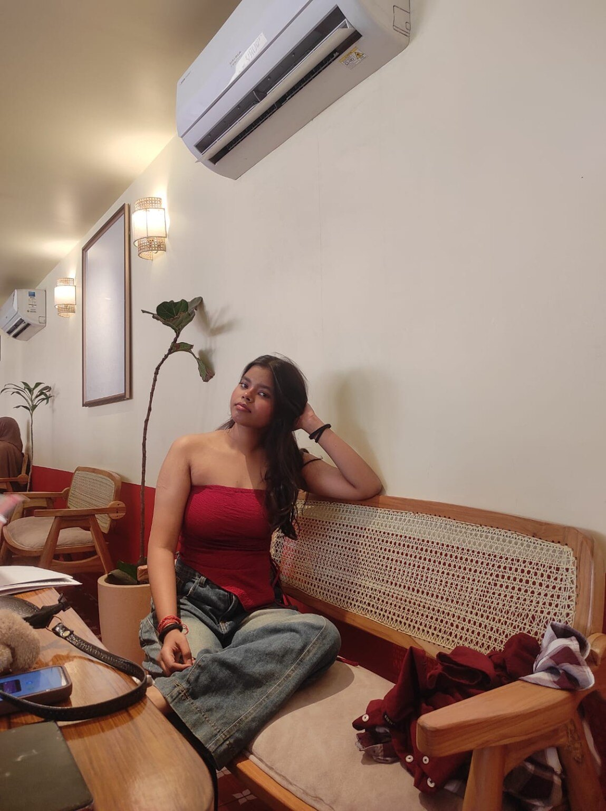
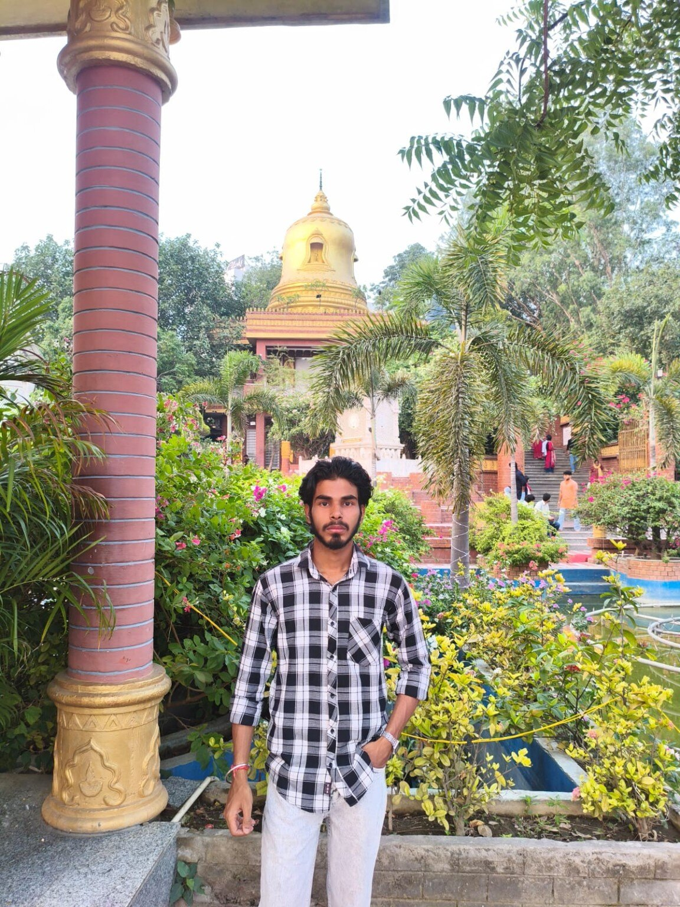
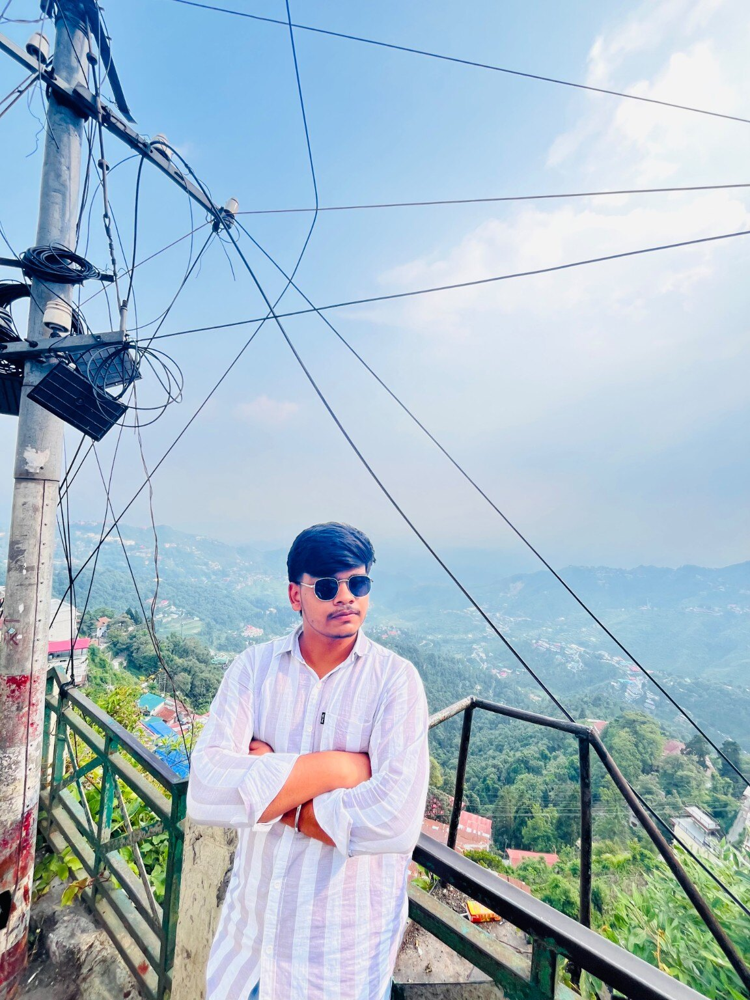

PROJECT LEAD
Srijan Gupta
Project Lead & Website Developer
Planning, website development and overall project direction.

RESEARCH & CONTENT
Roma Vishwakarma
Scholarship Research & Content
Researching scholarship opportunities and preparing student-friendly information.

ACADEMIC RESOURCES
Ashutosh Yadav
Academic Resources & Documentation
Organising academic resources and project documentation.

QUALITY ASSURANCE
Abhijeet Pal
Quality Assurance & UI Testing
Reviewing usability, interface behaviour and quality.
Built with a student-first approach.
Fundzy aims to make scholarship information more approachable without replacing official scholarship authorities or their application systems.